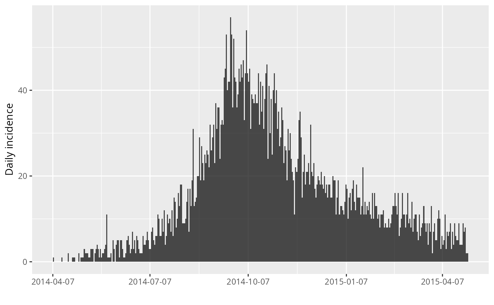
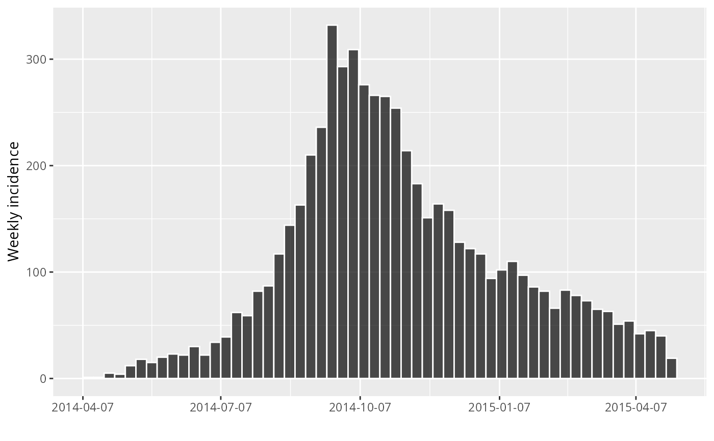
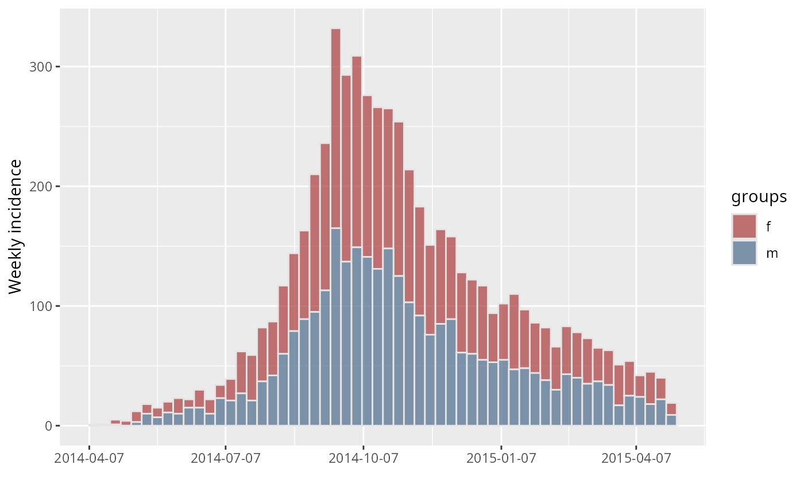
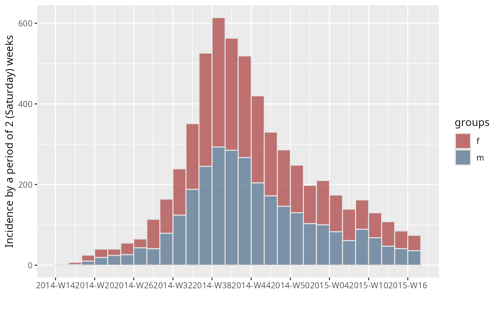

This function computes incidence based on dates of events provided in various formats. A fixed interval, provided as numbers of days, is used to define time intervals. Counts within an interval always include the first date, after which they are labeled, and exclude the second. For instance, intervals labeled as 0, 3, 6, ... mean that the first bin includes days 0, 1 and 2, the second interval includes 3, 4 and 5 etc.
incidence(dates, interval = 1L, ...)
# Default S3 method
incidence(dates, interval = 1L, ...)
# S3 method for class 'Date'
incidence(
dates,
interval = 1L,
standard = TRUE,
groups = NULL,
na_as_group = TRUE,
first_date = NULL,
last_date = NULL,
...
)
# S3 method for class 'character'
incidence(
dates,
interval = 1L,
standard = TRUE,
groups = NULL,
na_as_group = TRUE,
first_date = NULL,
last_date = NULL,
...
)
# S3 method for class 'integer'
incidence(
dates,
interval = 1L,
groups = NULL,
na_as_group = TRUE,
first_date = NULL,
last_date = NULL,
...
)
# S3 method for class 'numeric'
incidence(
dates,
interval = 1L,
groups = NULL,
na_as_group = TRUE,
first_date = NULL,
last_date = NULL,
...
)
# S3 method for class 'POSIXt'
incidence(
dates,
interval = 1L,
standard = TRUE,
groups = NULL,
na_as_group = TRUE,
first_date = NULL,
last_date = NULL,
...
)
# S3 method for class 'incidence'
print(x, ...)A vector of dates, which can be provided as objects of the
class: integer, numeric, Date, POSIXct, POSIXlt, and character. (See Note
about numeric and character formats)
An integer or character indicating the (fixed) size of the time interval used for computing the incidence; defaults to 1 day. This can also be a text string that corresponds to a valid date interval: day, week, month, quarter, or year. (See Note).
Additional arguments passed to other methods (none are used).
(Only applicable to Date objects) When TRUE (default) and the
interval one of "week", "month", "quarter", or "year", then this will
cause the bins for the counts to start at the beginning of the interval
(See Note).
An optional factor defining groups of observations for which incidence should be computed separately.
A logical value indicating if missing group (NA) should be treated as a separate group.
optional first/last dates to be used in the
epicurve. When these are NULL (default), the dates from the first/last
dates are taken from the observations. If these dates are provided, the
observations will be trimmed to the range of [first_date, last_date].
An 'incidence' object.
An list with the class incidence, which contains the
following items:
dates: The dates marking the left side of the bins used for counting
events. When standard = TRUE and the interval represents weeks, months,
quarters, or years, the first date will represent the first standard date
(See Interval specification, below).
counts: A matrix of incidence counts, which one column per group (and a single column if no groups were used).
timespan: The length of the period for which incidence is computed, in days.
interval: The bin size. If it's an integer, it represents the number of days between each bin. It can also be a character, e.g. "2 weeks" or "6 months".
n: The total number of cases.
weeks: Dates in week format (YYYY-Www), where YYYY corresponds to the
year of the given week and ww represents the numeric week of the year.
This will be a produced from the function aweek::date2week(). Note that
these will have a special "week_start" attribute indicating which day of
the ISO week the week starts on (see Weeks, below).
isoweeks: ISO 8601 week format YYYY-Www, which is returned only when ISO week-based weekly incidence is computed.
For details about the incidence class, see the dedicated
vignette:vignette("incidence_class", package = "incidence")
dates)Decimal (numeric) dates: will be truncated with a warning
Character dates should be in the unambiguous yyyy-mm-dd (ISO 8601)
format. Any other format will trigger an error.
interval)If interval is a valid character (e.g. "week" or "1 month"), then
the bin will start at the beginning of the interval just before the first
observation by default. For example, if the first case was recorded on
Wednesday, 2018-05-09:
"week" : first day of the week (i.e. Monday, 2018-05-07) (defaults to ISO weeks, see "Week intervals", below)
"month" : first day of the month (i.e. 2018-05-01)
"quarter" : first day of the quarter (i.e. 2018-04-01)
"year" : first day of the calendar year (i.e. 2018-01-01)
These default intervals can be overridden with standard = FALSE, which
sets the interval to begin at the first observed case.
As of incidence version 1.7.0, it is possible to construct standardized
incidence objects standardized to any day of the week thanks to the
aweek::date2week() function from the aweek package. The default
state is to use ISO 8601 definition of weeks, which start on Monday. You can
specify the day of the week an incidence object should be standardised to by
using the pattern "{n} {W} weeks" where "{W}" represents the weekday in an
English or current locale and "{n}" represents the duration, but this can be
ommitted. Below are examples of specifying weeks starting on different days
assuming we had data that started on 2016-09-05, which is ISO week 36 of
2016:
interval = "2 monday weeks" (Monday 2016-09-05)
interval = "1 tue week" (Tuesday 2016-08-30)
interval = "1 Wed week" (Wednesday 2016-08-31)
interval = "1 Thursday week" (Thursday 2016-09-01)
interval = "1 F week" (Friday 2016-09-02)
interval = "1 Saturday week" (Saturday 2016-09-03)
interval = "Sunday week" (Sunday 2016-09-04)
It's also possible to use something like "3 weeks: Saturday"; In addition, there are keywords reserved for specific days of the week:
interval = "week", standard = TRUE (Default, Monday)
interval = "ISOweek" (Monday)
interval = "EPIweek" (Sunday)
interval = "MMWRweek" (Sunday)
The "EPIweek" specification is not strictly reserved for CDC epiweeks, but can be prefixed (or posfixed) by a day of the week: "1 epiweek: Saturday".
first_date argumentPrevious versions of incidence had the first_date argument override
standard = TRUE. It has been changed as of incidence version 1.6.0 to
be more consistent with the behavior when first_date = NULL. This, however
may be a change in behaviour, so a warning is now issued once and only once
if first_date is specified, but standard is not. To never see this
warning, use options(incidence.warn.first_date = FALSE).
The intervals for "month", "quarter", and "year" will necessarily vary in the number of days they encompass and warnings will be generated when the first date falls outside of a calendar date that is easily represented across the interval.
The main other functions of the package include:
plot.incidence(): Plot epicurves from an incidence object.
fit(): Fit log-linear model to computed incidence.
fit_optim_split(): Find the optimal peak of the epidemic
and fits log-linear models on either side of the peak.
subset(): Handling of incidence
objects.
pool(): Sum incidence over groups.
as.data.frame.incidence(): Convert an incidence object to a
data.frame.
The following vignettes are also available:
overview: Provides an overview of the package's features.
customize_plot: Provides some tips on finer plot customization.
incidence_class: Details the content of the incidence
class.
## toy example
incidence(c(1, 5, 8, 3, 7, 2, 4, 6, 9, 2))
#> <incidence object>
#> [10 cases from days 1 to 9]
#>
#> $counts: matrix with 9 rows and 1 columns
#> $n: 10 cases in total
#> $dates: 9 dates marking the left-side of bins
#> $interval: 1 day
#> $timespan: 9 days
#> $cumulative: FALSE
#>
incidence(c(1, 5, 8, 3, 7, 2, 4, 6, 9, 2), 2)
#> <incidence object>
#> [10 cases from days 1 to 9]
#>
#> $counts: matrix with 5 rows and 1 columns
#> $n: 10 cases in total
#> $dates: 5 dates marking the left-side of bins
#> $interval: 2 days
#> $timespan: 9 days
#> $cumulative: FALSE
#>
## example using simulated dataset
if(require(outbreaks)) { withAutoprint({
onset <- outbreaks::ebola_sim$linelist$date_of_onset
## daily incidence
inc <- incidence(onset)
inc
plot(inc)
## weekly incidence
inc.week <- incidence(onset, interval = 7, standard = FALSE)
inc.week
plot(inc.week)
plot(inc.week, border = "white") # with visible border
# Starting on Monday
inc.isoweek <- incidence(onset, interval = "isoweek")
inc.isoweek
# Starting on Sunday
inc.epiweek <- incidence(onset, interval = "epiweek")
inc.epiweek
# Starting on Saturday
inc.epiweek <- incidence(onset, interval = "saturday epiweek")
inc.epiweek
## use group information
sex <- outbreaks::ebola_sim$linelist$gender
inc.week.gender <- incidence(onset, interval = 7,
groups = sex, standard = FALSE)
inc.week.gender
head(inc.week.gender$counts)
plot(inc.week.gender, border = "grey90")
inc.satweek.gender <- incidence(onset, interval = "2 epiweeks: saturday",
groups = sex)
inc.satweek.gender
plot(inc.satweek.gender, border = "grey90")
})}
#> > onset <- outbreaks::ebola_sim$linelist$date_of_onset
#> > inc <- incidence(onset)
#> > inc
#> <incidence object>
#> [5888 cases from days 2014-04-07 to 2015-04-30]
#>
#> $counts: matrix with 389 rows and 1 columns
#> $n: 5888 cases in total
#> $dates: 389 dates marking the left-side of bins
#> $interval: 1 day
#> $timespan: 389 days
#> $cumulative: FALSE
#>
#> > plot(inc)

#> > inc.week <- incidence(onset, interval = 7, standard = FALSE)
#> > inc.week
#> <incidence object>
#> [5888 cases from days 2014-04-07 to 2015-04-27]
#>
#> $counts: matrix with 56 rows and 1 columns
#> $n: 5888 cases in total
#> $dates: 56 dates marking the left-side of bins
#> $interval: 7 days
#> $timespan: 386 days
#> $cumulative: FALSE
#>
#> > plot(inc.week)
#> > plot(inc.week, border = "white")

#> > inc.isoweek <- incidence(onset, interval = "isoweek")
#> > inc.isoweek
#> <incidence object>
#> [5888 cases from days 2014-04-07 to 2015-04-27]
#> [5888 cases from ISO weeks 2014-W15 to 2015-W18]
#>
#> $counts: matrix with 56 rows and 1 columns
#> $n: 5888 cases in total
#> $dates: 56 dates marking the left-side of bins
#> $interval: 1 week
#> $timespan: 386 days
#> $cumulative: FALSE
#>
#> > inc.epiweek <- incidence(onset, interval = "epiweek")
#> > inc.epiweek
#> <incidence object>
#> [5888 cases from days 2014-04-06 to 2015-04-26]
#> [5888 cases from MMWR weeks 2014-W15 to 2015-W17]
#>
#> $counts: matrix with 56 rows and 1 columns
#> $n: 5888 cases in total
#> $dates: 56 dates marking the left-side of bins
#> $interval: 1 week
#> $timespan: 386 days
#> $cumulative: FALSE
#>
#> > inc.epiweek <- incidence(onset, interval = "saturday epiweek")
#> > inc.epiweek
#> <incidence object>
#> [5888 cases from days 2014-04-05 to 2015-04-25]
#> [5888 cases from (Saturday) weeks 2014-W14 to 2015-W17]
#>
#> $counts: matrix with 56 rows and 1 columns
#> $n: 5888 cases in total
#> $dates: 56 dates marking the left-side of bins
#> $interval: 1 week
#> $timespan: 386 days
#> $cumulative: FALSE
#>
#> > sex <- outbreaks::ebola_sim$linelist$gender
#> > inc.week.gender <- incidence(onset, interval = 7, groups = sex, standard = FALSE)
#> > inc.week.gender
#> <incidence object>
#> [5888 cases from days 2014-04-07 to 2015-04-27]
#> [2 groups: f, m]
#>
#> $counts: matrix with 56 rows and 2 columns
#> $n: 5888 cases in total
#> $dates: 56 dates marking the left-side of bins
#> $interval: 7 days
#> $timespan: 386 days
#> $cumulative: FALSE
#>
#> > head(inc.week.gender$counts)
#> f m
#> [1,] 1 0
#> [2,] 0 1
#> [3,] 4 1
#> [4,] 4 0
#> [5,] 9 3
#> [6,] 8 10
#> > plot(inc.week.gender, border = "grey90")

#> > inc.satweek.gender <- incidence(onset, interval = "2 epiweeks: saturday",
#> + groups = sex)
#> > inc.satweek.gender
#> <incidence object>
#> [5888 cases from days 2014-04-05 to 2015-04-18]
#> [5888 cases from (Saturday) weeks 2014-W14 to 2015-W16]
#> [2 groups: f, m]
#>
#> $counts: matrix with 28 rows and 2 columns
#> $n: 5888 cases in total
#> $dates: 28 dates marking the left-side of bins
#> $interval: 2 weeks
#> $timespan: 379 days
#> $cumulative: FALSE
#>
#> > plot(inc.satweek.gender, border = "grey90")

# Use of first_date
d <- Sys.Date() + sample(-3:10, 10, replace = TRUE)
# `standard` specified, no warning
di <- incidence(d, interval = "week", first_date = Sys.Date() - 10, standard = TRUE)
# warning issued if `standard` not specified
di <- incidence(d, interval = "week", first_date = Sys.Date() - 10)
#> Warning:
#>
#> As of incidence version 1.6.0, the default behavior has been modified so that `first_date` no longer overrides `standard`. This means that the first date will be either on or before 2025-06-09.
#> If you want to use Sys.Date() - 10 as the precise `first_date`, set `standard = FALSE`.
#>
#> To remove this warning in the future, explicitly set the `standard` argument OR use `options(incidence.warn.first_date = FALSE)`
# second instance: no warning issued
di <- incidence(d, interval = "week", first_date = Sys.Date() - 10)